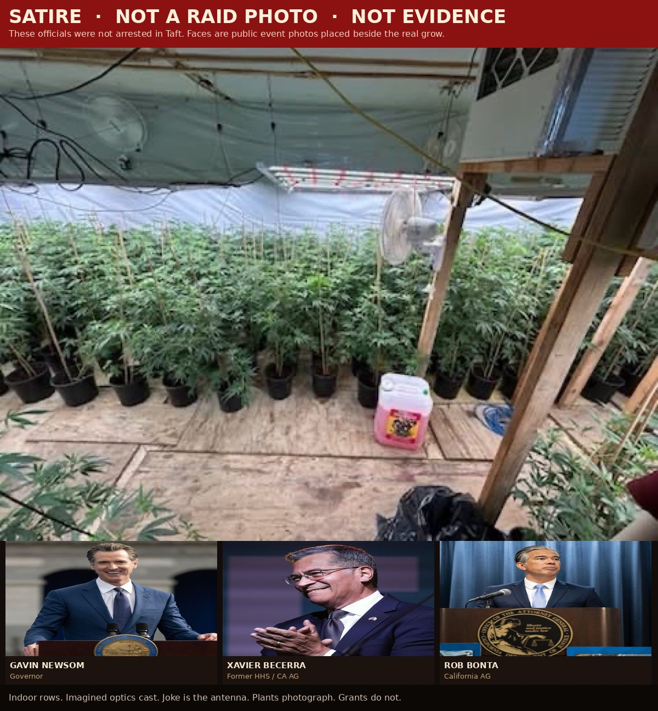
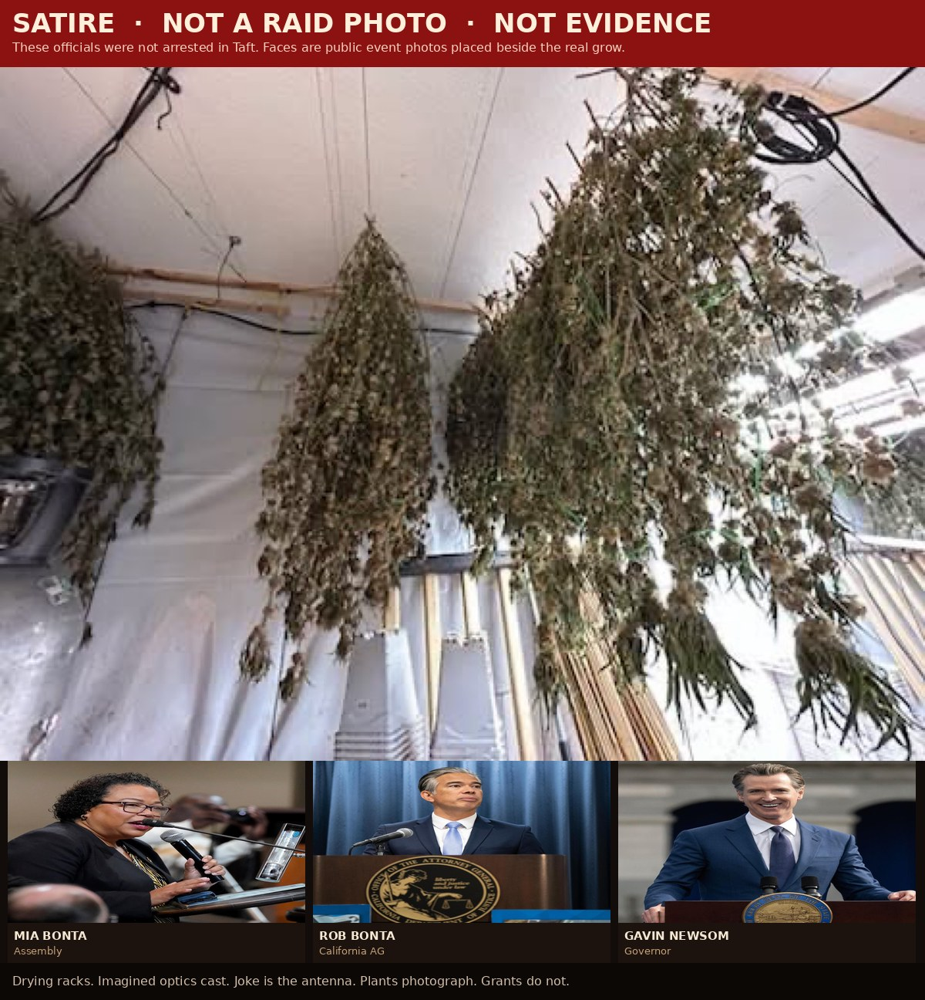
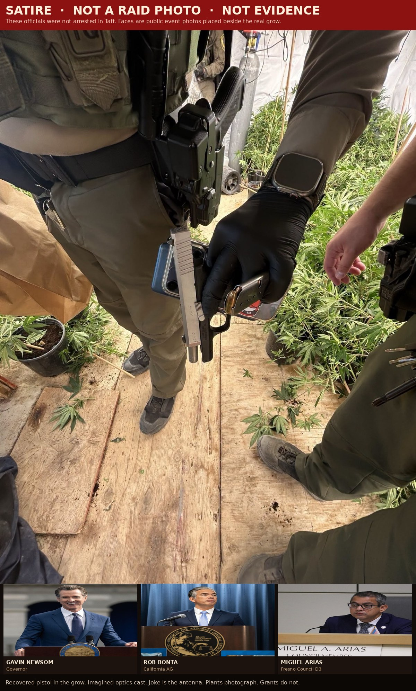
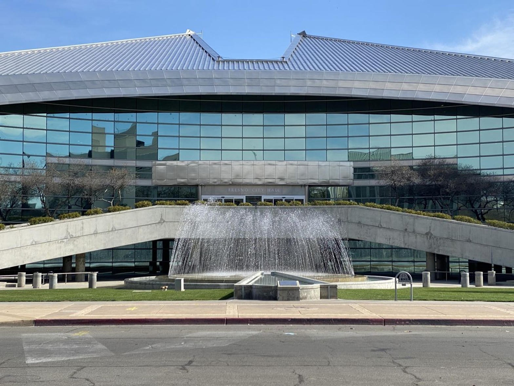
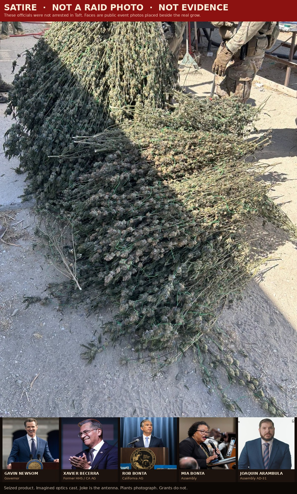
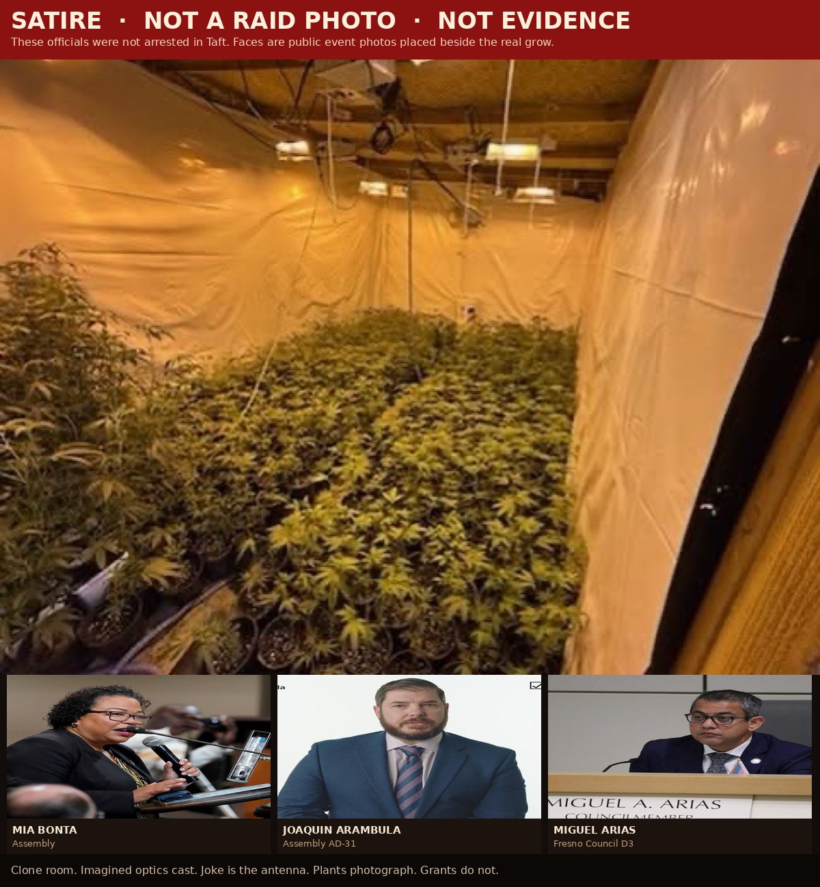
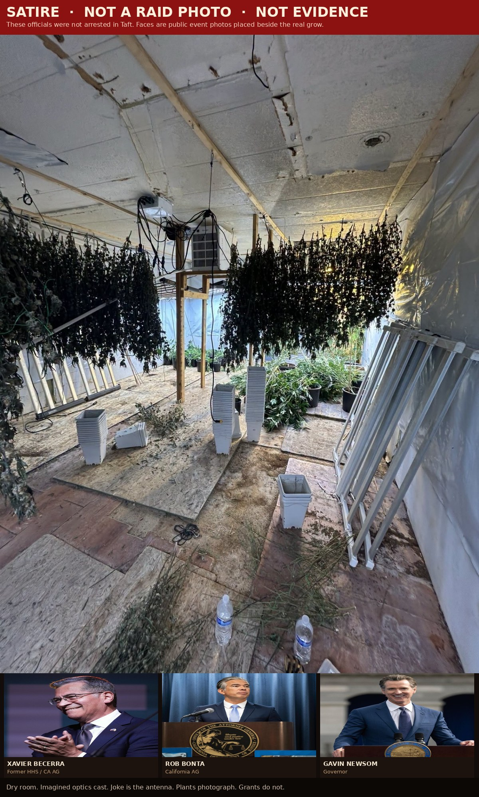
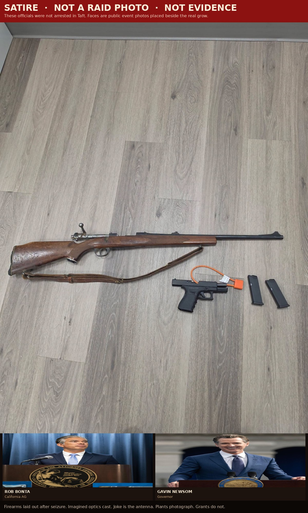

Lord, we come with open eyes. Do not let us love a camera more than a ledger. Amen.
2 Timothy 3:1-5
You should know this, Timothy, that in the last days there will be very difficult times. For people will love only themselves and their money. They will be boastful and proud, scoffing at God, disobedient to their parents, and ungrateful. They will consider nothing sacred. They will be unloving and unforgiving; they will slander others and have no self-control. They will be cruel and hate what is good. They will betray their friends, be reckless, be puffed up with pride, and love pleasure rather than God. They will act religious, but they will reject the power that could make them godly. Stay away from people like that!
Kern County did not need a prophet. They needed a warrant and a nose. On September 4, 2026, deputies from the Taft Substation, HIDTA, and Fish and Wildlife walked into a house on the 400 block of E Street and found what a conspiracy smells like when it cannot afford a communications director. Two thousand one hundred twelve indoor plants. Eight hundred seventy-three outdoor plants. Six hundred forty-one and a half pounds already processed. Two loaded guns. A man booked. Another address in Maricopa the same day. Nearly four thousand plants across the pair.

This is the picture they want you to rehearse. The plywood floor. The Hurricane fan. The hanging drying racks that look like a funeral for a forest. The bolt-action and the Glock laid out on laminate like a still life titled Consequences. If you work the California pipeline, you already know the punchline. The state can find a plywood grow in Taft. The state can smell it from the alley. The state can photograph the gun next to the pot and call the work done.

Matthew 7:3-5
And why worry about a speck in your friend’s eye when you have a log in your own? How can you think of saying to your friend, “Let me help you get rid of that speck in your eye,” when you can’t see past the log in your own eye? Hypocrite! First get rid of the log in your own eye; then you will see well enough to deal with the speck in your friend’s eye.
Here is the comedy, and it is not subtle. Imagine, as a joke and only as a joke, that the rows belonged to the professional class that lectures you about harm. Imagine Gavin Newsom walking the aisle with a watering can and a polling memo. Imagine Xavier Becerra checking the CO2 tank the way a cabinet secretary checks a grant announcement. Imagine Rob Bonta holstering the optics instead of the pistol. Imagine Mia Bonta smiling for the same camera that will later call a working man a cartel. Imagine Joaquin Arambula counting clones in the yellow room. Imagine Miguel Arias, District 3, explaining to the Tower that the smell is someone else’s neighborhood.
They are not in those photos. That is the point of the satire. If they were, the emotional antenna would spike. You would feel the crime in your throat. The same antenna stays calm when the dollars are federal, the language is compassionate, and the harm is spread across a million households that never get a raid photo.
Matthew 23:27-28
What sorrow awaits you teachers of religious law and you Pharisees. Hypocrites! For you are like whitewashed tombs, beautiful on the outside but filled on the inside with dead people’s bones and all sorts of impurity. Outwardly you look like righteous people, but inwardly your hearts are filled with hypocrisy and lawlessness.
Look at the two rooms. One has black pots and a blue barrel and a hose coiled like a snake that cannot afford a lobbyist. One has a dome and a flag and a thousand ways to say the word equity while the invoice goes to people who will never tour E Street. The Taft grow can ruin a block. The asymmetric grift off federal dollars can ruin the habit of telling the truth. One is a felony you can photograph. The other is a lifestyle with letterhead.
I am not baptizing the grow. Cultivation at that volume, guns in the same room, processed weight stacked for sale: that is crime, and Kern County was right to kick the door. The satire is the ranking. The men who hung those plants can wreck a street. The class that teaches you to clutch pearls at the plants while the public purse is treated like a private garden can wreck the idea of a public at all.

Luke 16:10-12
If you are faithful in little things, you will be faithful in large ones. But if you are dishonest in little things, you won’t be honest with greater responsibilities. And if you are untrustworthy about worldly wealth, who will trust you with the true riches of heaven? And if you are not faithful with other people’s things, why should you be trusted with things of your own?
Other people’s things. That is the whole sermon. The Taft operator took dirt, power, water, and risk, and tried to turn it into cash. The professional class takes tax, grant, contract, and narrative, and tries to turn it into permanence. One group gets the raid because the stench is botanical and the conspiracy is obvious. The other group writes the press release because they own the antenna.

Isaiah 5:20
What sorrow for those who say that evil is good and good is evil, that dark is light and light is dark, that bitter is sweet and sweet is bitter.
They will call this page cruel because it names names next to a crime scene the names did not commit. Good. That is the antenna working as designed. The same machine that can make you hate a plywood floor in Taft can make you bless a program you cannot audit. Newsom, Becerra, the Bontas, Arambula, Arias: you are not charged in Kern County. You are charged here with the older offense. You act religious about harm when the harm has a leaf. You go quiet when the harm has a catalog code.
Ephesians 5:11-13
Take no part in the worthless deeds of evil and darkness; instead, expose them. It is shameful even to talk about the things that ungodly people do in secret. But their evil intentions will be exposed when the light shines on them.




Working people in the pipeline already know the joke in their bones. You can smell a grow. You cannot always smell a grant. A deputy can count plants. A voter is told the count of public money is too complicated for a Tuesday. That is why the comedy has to be loud. Laugh at the plastic palace. Then laugh louder at the idea that the plastic palace is the worst room in California.
Stay away from people who love only themselves and their money and still need you to perform disgust on cue. First the log. Then the speck. Then the truth that both rooms can be dirty, and only one of them hired a photographer in advance.
Luke 16:15
You like to appear righteous in public, but God knows your hearts. What this world honors is detestable in the sight of God.
Go. Keep your nose. Do not let a professional class rent it from you.
Sources
- Kern County Sheriff’s Office and local news, September 4, 2026: search warrants in Taft (400 block of E Street) and Maricopa (Klipstein Street). Combined seizures reported as 2,112 indoor plants and 873 outdoor plants in Taft, plus processed weight and loaded firearms; additional plants, processed marijuana, and a loaded handgun in Maricopa. Three arrests announced that day.
- KGET / BakersfieldNow reporting on the same operation, September 4, 2026.
- Scripture: New Living Translation.
- Photographs of the grow: enforcement-scene images supplied with this sermon, consistent with the published Taft/Maricopa raid. Civic photographs: Fresno City Hall, California State Capitol, United States Capitol. Official portraits and press photographs of Newsom, Becerra, Rob Bonta, Mia Bonta, Arambula, and Arias are public-event photos placed on labeled satire boards. They are not composites of those people standing in the grow. They are not evidence of a booking.